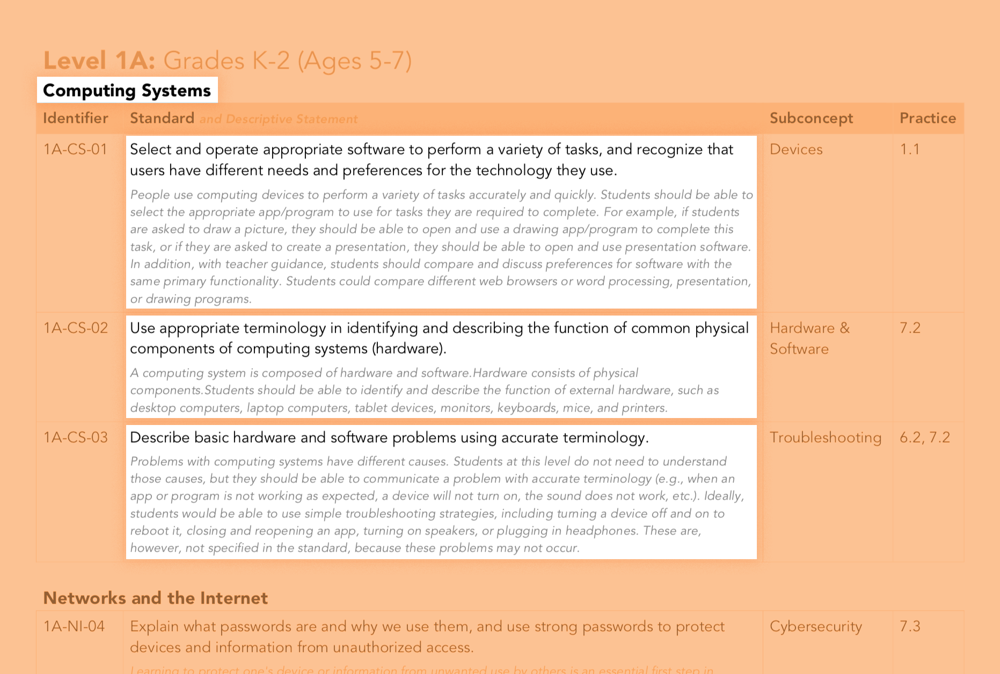
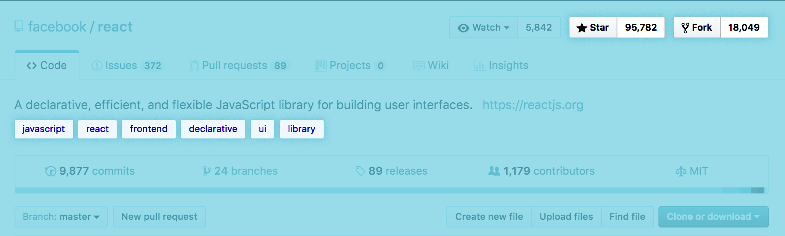
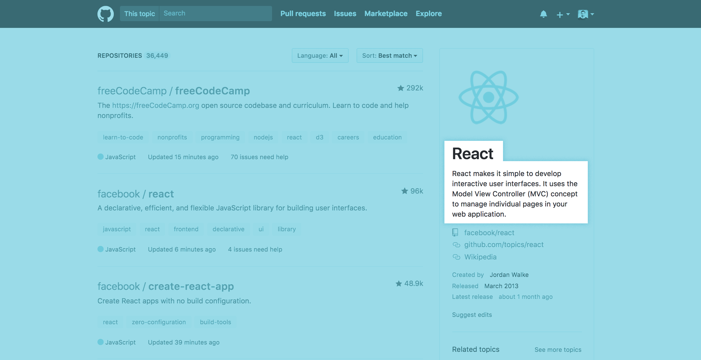

Methodology
The data
CS Guidelines / text data
CSTA (The Computer Science Teacher Association) was found in 2004 with a mission to support CS education for K-12 students in the US, and their counterparts around the world.
In 2017, the association updated their latest guidelines of practices toward teaching and implementing CS classes. Divided in six groupings by age, there are 120 standards, as they name them: we could just call them concepts. These are also grouped by 5 broader themes:
- Computing Systems
- Networks and the Internet
- Data and Analysis
- Algorithms and Programming
- Impacts of Computing

We took all of those standards, run a total count of when they appear, and also the rate of those appearances by the total number of words. Common stop words were removed from this collection of words.
Github / text data + meta-data (with quantitative and qualitative details)
Github is a social and web-based platform that has a variety of uses:
- Open-source distribution of software
- Tool for managing version control of documents and projects
- Hosting and publishing hub.
These uses also revolve around code-based projects, that are maintained by around 24 million users as of 2017. Code is organized in repositories, pages where you can upload your projects, update them and also interact with others.
The interaction is crucial to Github. People can change things on other user's projects, copy and modify things for their own personal use and create a network of followers and following users. This is done in 2 major ways: forking, which is a copy of projects, and starring, where you can bookmark projects and people.

Under the repositories, people can tag things, as a way of helping with the indexing of content on Github.
We picked those tags (known as topics) for the most followed and forked repositories (the top 500 for each group), and the description given by the owner of each repository.
